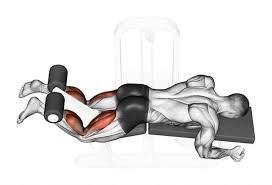
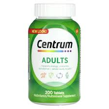

Nutrição
Mudar os hábitos alimentares pode parecer desafiador, mas com algumas dicas práticas, é possível adotar uma dieta mais saudável de forma gradual e sustentável.
Planeie suas refeições
Comece a semana planeando suas refeições. Isso ajuda a evitar escolhas alimentares impulsivas e garante uma dieta equilibrada.
Inclua mais frutas e vegetais
Tente incluir frutas e vegetais em todas as refeições. Eles são ricos em vitaminas, minerais e fibras, essenciais para a saúde.
Hidrate-se bem
Beber água ao longo do dia é crucial para a digestão e o funcionamento geral do corpo. Mantenha uma garrafa de água sempre por perto.
Reduza o consumo de açucares e alimentos processados
Evite alimentos com altos teores de açúcar e processados. Opte por opções mais naturais e integrais.
Faça lanches saudáveis
Escolha lanches saudáveis, como frutas, nozes ou iogurte natural, para manter a energia e evitar picos de fome.
Planos de Treino
Estes são os exercícios necessários para obter o seu físico de sonho e ter uma saúde boa.
- Bíceps
- Tríceps
- Peito
- Costas
- Ombros
- Pernas
- Abdominais
Rosca alterada com halteres
Rosca martelo
Curvatura de concentração com halteres no joelho
Tríceps corda
Mergulho de tríceps
Flexão diamante
Supino reto com barra
Supino inclinado com halteres
Aberturas
Puxada aberta
Voador dorsal
Remada curva com barra
Desenvolvimento com halteres
Elevação lateral
Arnold press na máquina

Prensa
Extensora
Agachamento
Abdominal canivete
Prancha
Abdominal alpinista
Suplementos
Conteúdo sobre Suplementos...
- Creatina
- Whey Protein
- Multivitamínicos
- Vitamina D
- Magnésio
- Ómega 3
É uma substância que fornece energia para os músculos melhorando o desempenho físico, aumentando a massa muscular e prevenindo doenças crônicas;
É produzida pelos rins, pâncreas e fígado, mas também está presente em alimentos como peixe, carne, frango, leite e derivados. Além disso, a creatina tanbém pode ser encontrada, em maiores concentrações, na forma de suplementos em cápsulas ou pó, que podem ser ingeridos antes ou depois dos treinos.
A Whey Protein (proteína de soro de leite) é um dos suplementos mais conhecidos e usados por praticantes de atividades físicas.
Oferece todos os aminoácidos essenciais para a recuperação e construção muscular, ou seja, por favorecer o ganho de força e hipertrofia (aumento da massa magra).
Ajuda a promover o bom funcionamento geral do corpo;
Ajuda a equilibrar o sistema imunitário, nervoso e hormonal;
Contém minerais que contribuem para o bom funcionamento dos músculos, ossos e centenas de processos do corpo;
É uma boa opção porque contém diferentes vitamina e minerais, mas podes também adquiri-las individualmente, através de suplementos de vitaminas individuais.
Estudos revelam que uma grande percentagem da população europeia tem carência de Vitamina D;
Esta vitamina é produzida pelo nosso corpo quando estamos expostos ao sol e também a podes encontrar em alguns alimentos;
Promove a saúde oral e óssea;
Fortalece e regula o sistema imunitário hormonal;
Ajuda a garantir bons níveis de colesterol no sangue.

Tal como as vitaminas, os minerais também podem ser consumidos individualmente. Alguns minerais são o cálcio, o potássio ou o magnésio;
É comum as pessoas terem falta de magnésio. Se é o teu caso, não deixes de considerar tomar um suplemento de magnésio.
Ele é importante para: Relaxamento muscular, Coagulação do sangue, Produção de ATP (molécula responsável pelo fornecimento de força explosiva para os músculos).
Embora seja uma gordura, não tenhas medo de a consumir;
s gorduras saudáveis, como esta, são essenciais para o nosso corpo: Melhora o sistem imunitário, Promove a saúde do coração, Melhora a função cerebral, Melhora a mobilidade articular.
Bulking
Conteúdo sobre Bulking...
- Bulking é o processo utilizado por atletas para ganhar peso e massa muscular. O objetivo é consumir mais calorias do que é capaz de queimar e de preferência de fontes saudáveis, como carnes, Whey Protein, laticínios e ovos;
- O termo bulking surgiu na realidade no mundo do fisiculturismo profissional onde os bodybuilders dividem o seu ano em períodos de competições e a "época fora de competição"
Dicas:
Aumentar o consumo de carbohidratos complexos (integrais);
Colocar pelo menos 5 refeições por dia;
Não passar mais de 3 horas sem comer;
Incluir uma fonte de proteína em todas as refeições;
Cuidado com o excesso de sal, que retêm muito líquido;
Aumentar gradualmente as cargas durante os treinos na fase de bulking;
Incluir gorduras saudáveis na alimentação e evitar frituras;
Manter o controlo do consumo de calorias para não exagerar;
Em teoria, a prática de exercícios aeróbicos nesta fase pode levar a perda de massa muscular e dificultar o ganho de peso. A verdade é que um pouco de treino intenso pode minimizar os ganhos de gorudra durante o bulking.
Duração do Bulking...
O tempo de duração do Bulking costuma ser de quatro a seis meses. Não é recomendável passar mais tempo nessa fase. Nesse período, o praticante de Bulking deve se alimentar de uma quantidade de caloria superior à que seu metabolismo queima, para que assim, consiga formar músculos em sua rotina de exercícios.
Cutting
Conteúdo sobre Cutting...
- A perda de excesso de gordura é o que chamamos de Cutting. Nos bodybuilders profissionais, ela é feita algumas semanas antes das competições, com dietas com muita proteína e poucos carbohidratos;
- O objetivo da fase de cutting é eliminar somente a gordura, evitando ao máximo perder massa muscular;
- O cutting não significa somente emagrecer para ficar com o abdómen trincado. Se não for feito da maneira adequada, não se perde somente gordura, mas também toda a massa muscular que ganhou durante a fase de bulking um cutting inteligente é aquele que se consegue livrar do excesso de gordura sem comprometar a sua musculatura, tudo sem passar fome ou ter que fazer horas e mais horas de exercícios aeróbicos;
- A prática tradicional no fisiculturismo sempre foi de comer de tudo durante o bulking e depois fazer uma fase de cutting com pouquissimas calorias para emgrecer rápido. É claro que se você de 3 mil para 800 calorias por dia vai emagracer mas a que custo? Álem de dizer adeus às gorduras e massa muscular você pode também comprometer a sua saúde;
Dicas:
Reduza o teor de carboidratos, mas não os elimine por completo. Nos dias de treino intenso aumente o seu consumo de legumes, cereais e grãos integrais;
Eleve seu consumo de proteínas para evitar o catabolismo muscular;
Bebe muita água para ajudar a eliminar as toxinas e favorecer o emagrecimento;
Não tente emagrecer muito rápido, neste caso menos é mais;
Coma regularmente para manter o metabolismo em alta e para ter energia para os treinos;
Se quiser minimizar a sua perda de massa muscular, faça suplementação com aminoácidos.
Duração do Cutting...
A duração do cutting é todo o período que uma pessoa pratica a dieta o cutting que deve ser de pelo menos 2-4 meses, não podendo passar disso. Isso porque manter um défice calórico por muito tempo pode acabar por afetar a energia do organismo e causar perda de músculos.